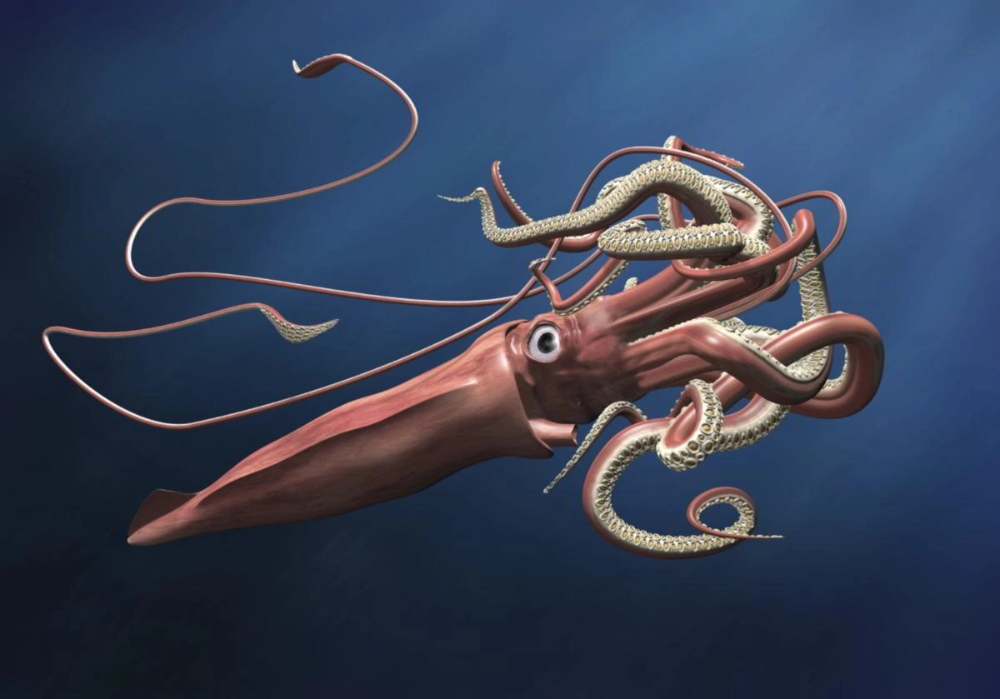

Calamar
Los téutidos (Teuthida) son un orden de moluscos cefalópodos conocidos vulgarmente como calamares (debido a su "hueso" calcáreo, conocido como pluma o caña = calamus en latín). Contiene dos subórdenes, Myopsina y Oegopsina (el último incluye a Architeuthis dux, el calamar gigante y a Mesonychoteuthis hamiltoni o calamar colosal). Son animales marinos y carnívoros.
Indice
Descripción
Los calamares son moluscos de cuerpo blando cuyas formas evolucionaron para adoptar un estilo de vida depredador activo. La cabeza y las extremidades del calamar están en un extremo de un cuerpo largo, y este extremo es funcionalmente anterior, guiando al animal a medida que se desplaza por el agua. Un conjunto de ocho brazos y dos tentáculos distintivos rodean la boca; cada apéndice toma la forma de un hidrostato muscular y es flexible y prensil, por lo general con ventosas en forma de disco.
Las ventosas pueden estar directamente sobre el brazo o ser pedunculadas. Sus bordes están endurecidos con quitina y pueden contener diminutos dentículos similares a dientes. Estas características, además de una musculatura fuerte y un pequeño ganglio debajo de cada ventosa que permite el control individual, proporcionan una adherencia muy poderosa para agarrar a la presa. Algunas especies tienen ganchos y tentáculos en los brazos, pero su función no está clara. Los dos tentáculos son mucho más largos que los brazos y son retráctiles. Las ventosas se limitan a la punta espátula del tentáculo, conocida como manus.
En el macho maduro, la mitad externa de uno de los brazos izquierdos está hectocotilizada y termina en una almohadilla copulatoria en lugar de ventosas, que se usa para depositar un espermatóforo dentro de la cavidad del manto de una hembra. Una parte ventral del pie se ha convertido en un embudo a través del cual el agua sale de la cavidad del manto.
La masa principal del cuerpo está encerrada en el manto, que tiene una aleta de natación a lo largo de cada lado. Estas aletas no son la principal fuente de locomoción en la mayoría de las especies. La pared del manto es muy musculosa e interna. La masa visceral, que está cubierta por una fina epidermis membranosa, forma una región posterior en forma de cono conocida como "joroba visceral". El caparazón del molusco se reduce a una "pluma" quitinosa longitudinal interna en la parte funcionalmente dorsal del animal; la pluma actúa para endurecer el calamar y proporciona uniones para los músculos.
En la parte funcionalmente ventral del cuerpo hay una abertura a la cavidad del manto, que contiene las branquias (ctenidios) y las aberturas de los sistemas excretor, digestivo y reproductivo. Un sifón de inhalación detrás del embudo atrae agua hacia la cavidad de la chimenea a través de una válvula. El calamar utiliza el embudo para la locomoción mediante propulsión a chorro precisa. En esta forma de locomoción, el agua es succionada por la cavidad del manto y expulsada fuera del embudo en un chorro fuerte y rápido. La dirección de viaje varía según la orientación del embudo. Los calamares son buenos nadadores y ciertas especies pueden "volar" distancias cortas fuera del agua.
Mecanismos de defensa
Camuflaje
Los calamares utilizan diferentes tipos de camuflaje: activo para la coincidencia de fondo (en aguas poco profundas) y contrailuminación. Esto ayuda a protegerlos de sus depredadores y les permite acercarse a sus presas.
La piel está cubierta de cromatóforos controlables de diferentes colores, lo que permite que el calamar combine su coloración con la de su entorno. El juego de colores también puede distraer a la presa de los tentáculos del calamar que se acercan. La piel también contiene reflectores de luz llamados iridóforos y leucóforos que, cuando se activan, en milisegundos crean patrones de piel cambiantes de luz polarizada. Tal camuflaje de piel puede cumplir varias funciones, como la comunicación con calamares cercanos, la detección de presas, la navegación y la orientación durante la caza o la búsqueda de refugio. El control neural de los iridóforos que permiten cambios rápidos en la iridiscencia de la piel parece estar regulado por un proceso colinérgico que afecta a las proteínas reflectinas.
Algunos calamares mesopelágicos como el calamar luciérnaga y el calamar de aguas medias usan camuflaje de contrailuminación, generando luz para igualar la luz descendente de la superficie del océano. Esto crea el efecto de contrasombreado, haciendo que la parte inferior sea más clara que la superior.
El calamar hawaiano también utiliza la contrailuminación, que tiene una bacteria simbiótica (Aliivibrio fischeri) que produce luz para ayudar al calamar a evitar a los depredadores nocturnos. Esta luz brilla a través de la parte inferior de la piel del calamar y es generada por un órgano de luz grande y complejo de dos lóbulos dentro de la cavidad del manto del calamar. Desde allí, escapa hacia abajo; parte de ella viaja directamente, parte sale de un reflector en la parte superior del órgano (lado dorsal). Debajo hay una especie de iris, que tiene ramas (divertículos) de su saco de tinta, con una lente debajo de eso; tanto el reflector como la lente se derivan del mesodermo. El calamar controla la producción de luz cambiando la forma de su iris o ajustando la intensidad de los filtros amarillos en su parte inferior, lo que presumiblemente cambia el equilibrio de las longitudes de onda emitidas. La producción de luz muestra una correlación con la intensidad de la luz descendente, pero es aproximadamente un tercio más brillante; el calamar puede rastrear cambios repetidos en el brillo. Debido a que el calamar hawaiano se esconde en la arena durante el día para evitar a los depredadores, solo usa contrailuminación durante la noche.
Distracción de los depredadores con tinta
Los calamares distraen a los depredadores atacantes expulsando una nube de tinta, lo que les da la oportunidad de escapar. La glándula de tinta y su saco de tinta asociado se vacían en el recto cerca del ano, lo que permite que el calamar descargue rápidamente tinta negra en la cavidad del manto y el agua circundante. La tinta es una suspensión de partículas de melanina y se dispersa rápidamente para formar una nube oscura que oculta las maniobras de escape del calamar. Los peces depredadores también pueden verse disuadidos por la naturaleza alcaloide de la descarga, que puede interferir con sus quimiorreceptores.
Mitología
Los calamares de gran tamaño han dado lugar, junto a los pulpos gigantes, a la leyenda escandinava del kraken.
Relación con el ser humano
Los calamares no son peligrosos, aunque algunas especies son muy agresivas. Sin embargo, los calamares gigantes pueden ser peligrosos si un humano se encuentra con uno, siendo el cachalote su único depredador. El calamar gigante no se emplea en la alimentación, dado que en su cuerpo hay amoníaco que le sirve para descender a doscientos metros.